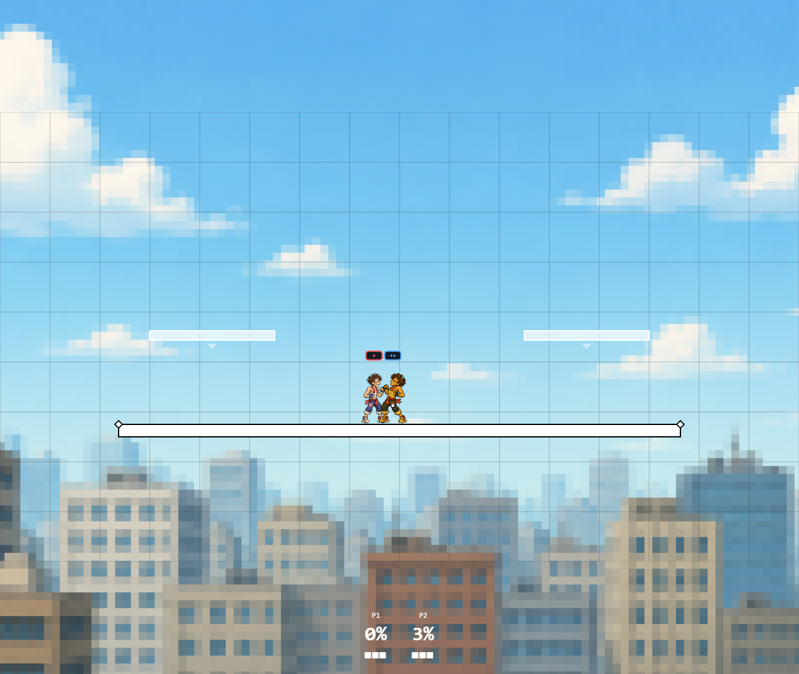

4 November 2026 · batch 31
The old attack geometry extended well beyond the fists. Both attack reach and body damage shapes now fit the sprite scale more closely.
Play updated local build · Evidence and limits
Distances below are between fighter centers, not empty visible gaps. Before values use the old circle equation; after values are sampled from the actual resolver in 0.25-world-unit steps. The jab drawing reaches approximately 35.1 / 38.0 / 32.4 units for All-Rounder / Abe / Swift.
| Attacker | Defender | Before | After |
|---|---|---|---|
| all-rounder | all-rounder | 95.0 | 45.25 |
| all-rounder | abe-lincoln | 98.9 | 48.25 |
| all-rounder | swift | 93.0 | 44.25 |
| abe-lincoln | all-rounder | 105.9 | 50.75 |
| abe-lincoln | abe-lincoln | 110.0 | 53.75 |
| abe-lincoln | swift | 103.7 | 49.75 |
| swift | all-rounder | 96.0 | 45.75 |
| swift | abe-lincoln | 99.7 | 48.75 |
| swift | swift | 94.0 | 44.75 |
All 1,261 workspace tests passed (17 skipped), along with type checks. All 48 review/local browser cases and the separate four-client test passed: 49 total. The actual-game test confirms a jab at 75-unit center separation does zero damage, then connects at 30 units. All fighter pairings and both facings also have close-hit/distant-whiff collision tests.
Staged production build passed; all fourteen live sprite atlas pages loaded with no failed requests or page errors. Validation details

This is a horizontal reach correction using measured sprite scale and simple body capsules, not per-pixel or fully pose-specific collision. Damage, timing, weight and movement tuning were not changed.
Evidence paths relative to C:/Github/smash-bros-clone:
packages/engine/src/hitbox/index.ts
packages/engine/src/hitbox/spriteReach.test.ts
packages/engine/src/hitbox/jabCoverage.test.ts
apps/client/e2e/fighter-art-review.spec.ts